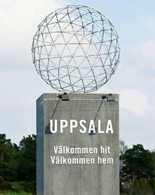
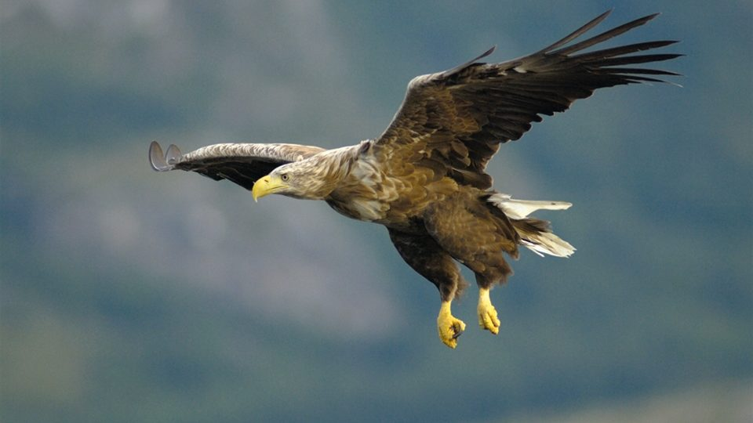
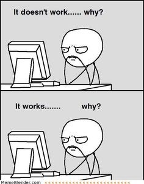
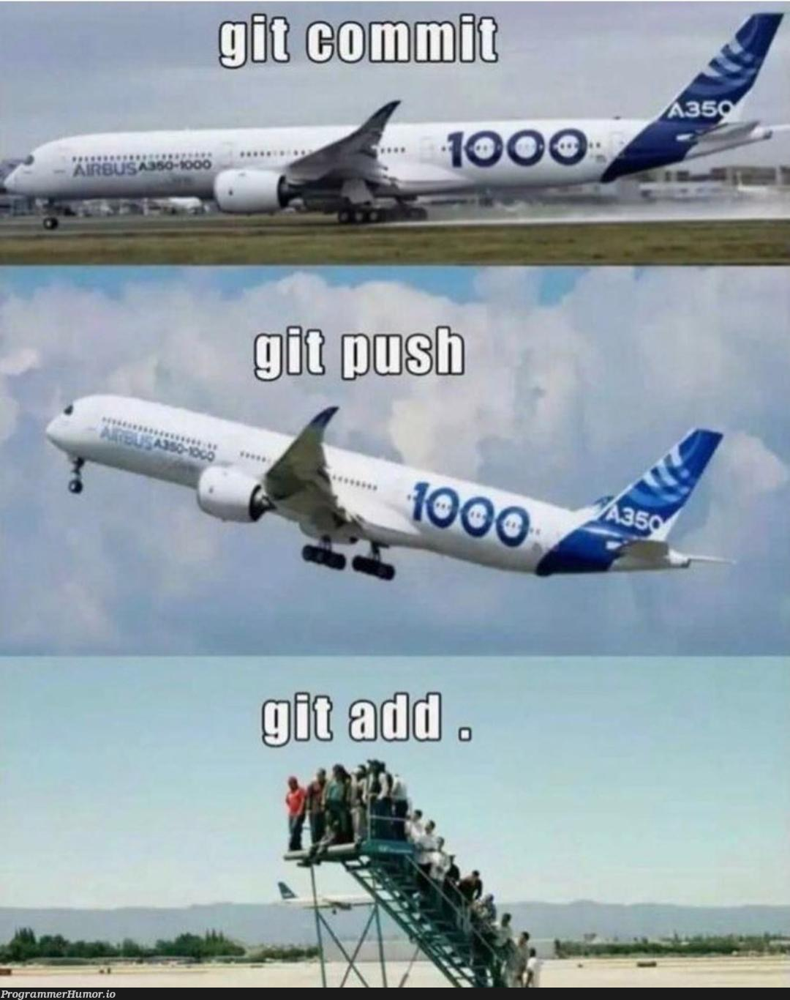
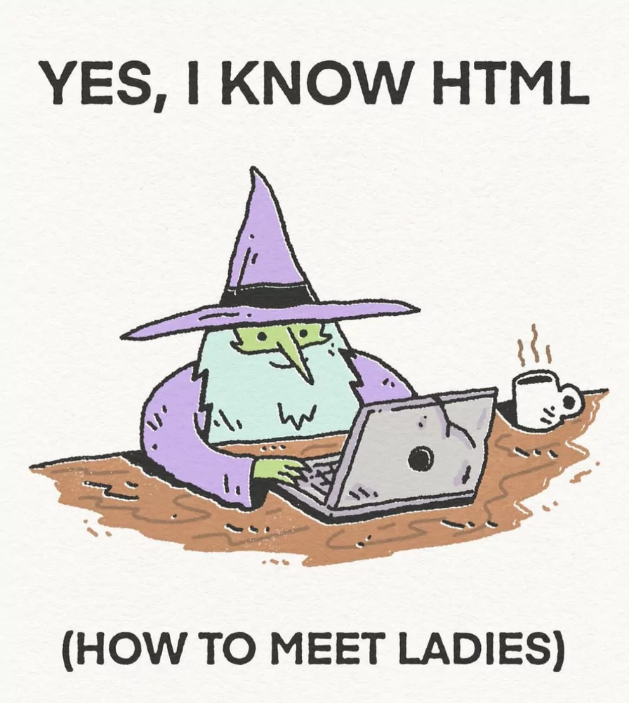

Galleri
Uppsalas slogan
Uppsala är bäst!
Sång av Gunnar Wennerberg
En havsörn

Uppsala ligger i Uppland. Och Upplands landsskapsfågel är havsörnen.
Klicka här för att höra hur den låter
En video på en havsörn
Memes om programering


